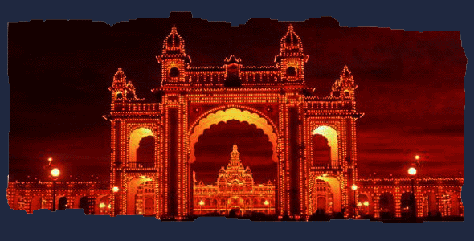

Mysore officially renamed as Mysuru, is the third most populous and also the third largest city[4] in the state of Karnataka, India. Located at the base of the Chamundi Hills about 146 km (91 mi) southwest of the state capital Bengaluru, it is spread across an area of 128.42 km2 (50 sq mi). According to the provisional results of the 2011 national census of India, the population is 887,446. Mysore City Corporation is responsible for the civic administration of the city, which is also the headquarters of the Mysore district and the Mysore division.
Mysore served as the capital city of Kingdom of Mysore for nearly six centuries, from 1399 until 1947. The Kingdom was ruled by the Wodeyar dynasty, except for a brief period in the late 18th century when Hyder Ali and Tipu Sultan were in power. Patrons of art and culture, the Wodeyars contributed significantly to the cultural growth of the city. The cultural ambiance and achievements of Mysore earned it the sobriquet Cultural capital of Karnataka.